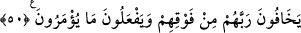

(melekler)” kelimesi, tâzim ve hürmet gâyesiyle “mâ fi’s-semâvâti (göklerde
bulunanlar)”a atfedilmiştir.
Her şey yaratıcısının huzûrunda, kendi haline göre secde etmektedir. Yine her şey
kendi hal lisanıyla O’nu tesbih eder. Bâzılarının tesbîhi söz ile, bâzılarının hal iledir.
Onların dillerini ve hallerini ancak Allah bilir.
Mesnevi’de der ki:
Sen, her şeyi, seni tesbih eder bir hâle koymuşsun,
Akıl ve temyiz sâhibi olanlar da seni tesbih eder, olmayanlar da.
Her birinin başka çeşit bir tesbihi var.
Bunun halinden onun haberi bile yok!
İnsan, cansız şeylerin tesbih etmesini inkâr eder
Ama cansız şeyler, O’na kullukta üstâddır.
Bilesin ki Allah, yaratılmışların her çeşidine, hayvanlardan cansızlara kadar her biri
için kulak, göz, lisan ve anlayış vermiştir. İşte onlarla Hakk’ın kelâmını işitir, Hakk’ın
şâhidlerini görür, Hak ile konuşur ve Hakk’ın işâretini anlarlar. Nitekim Allah Teâlâ,
göklerin ve yerin hallerinden haber vermiştir. Onlar henüz ademde (yoklukta) iken,
onlara kendi hitabını işitecek kulak verdi de, Allah’ın “İsteyerek veya istemeyerek
gelin!” (Fussılet, 41/11) sözünü işittiler. Onlara bir idrak verdi de onunla kelamını
anladılar. Onlara lisan verdi de onunla: “isteyerek geldik.” (Fussılet, 41/11) dediler.
Her şey Allah’ı bu lisan ile tesbih eder ve bu istek ile O’na secde eder. İşte bu melekûtî
lisan sebebiyle, Hz. Peygamber (s.a.)’in mucizesi olarak elindeki taşlar tesbih ediyordu.
Üç taş Davud (s.a.) ile konuştu, dağlar onunla berâber tesbih etti. (bk. Sebe, 34/10)
Allah Teâlâ “O’nu hamd ile tesbîh etmeyen hiçbir şey yoktur. Ne var ki siz, onların
tesbîhini anlamazsınız.” (el-İsrâ, 17/44) buyurduğuna göre, biz nasıl secde ettiğini
anlamasak bile her şeyin ona secde etmekte olduğu uzak görülemez.
Kâşifî der ki: “Bu âyette secde eylemek gerekir. Bu secde âyeti, Kur’an’daki secde
âyetlerinin üçüncüsüdür. Hz. Şeyh (k.s.) Fütûhât’ta şöyle der: Bu âyette ulvî ve süflî
âlemin zillet ve korku makamında Hakk’a secde ettiği anlatılmaktadır. Kula gerekir ki
bu yerde o da bu sıfatla mevsuf olsun ve kendisini secde edenler zümresine dâhil
eylesin.”
50. Onlar, üstlerindeki Rablerinden korkarlar ve kendilerine ne emrolunursa onu